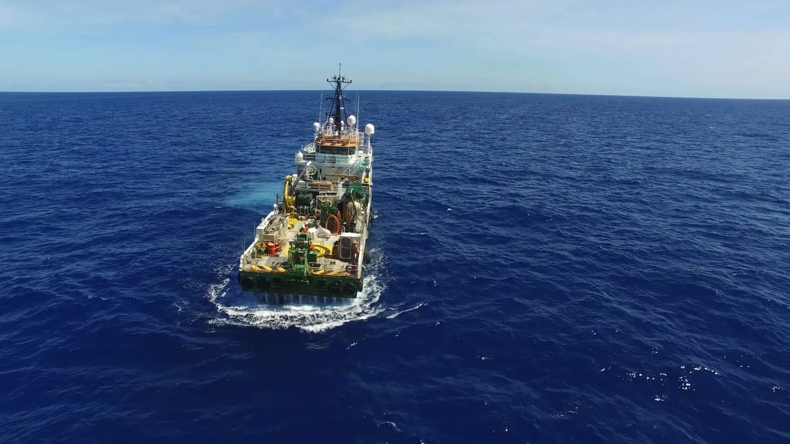
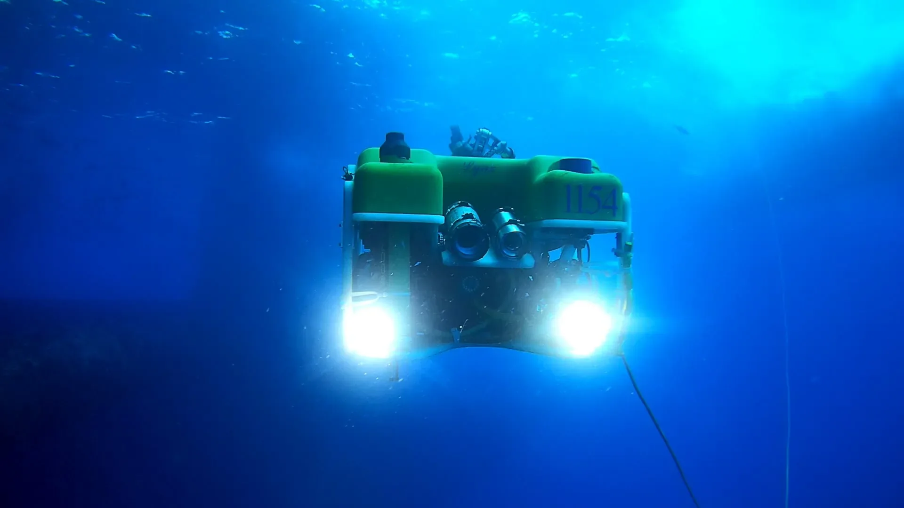
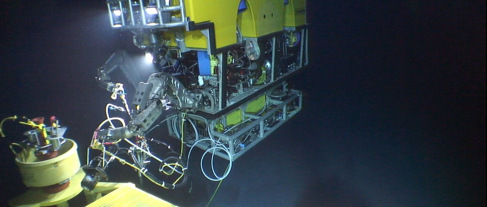

PT / EN◐Contato

Oceânica · Engenharia submarina desde 1978
Embarcação da Oceânica seguindo para mar aberto
Role para descer

02 · Coluna d'água
A mesma equipe opera nos dois lados da linha: mergulho raso, ROVs de observação e veículos Work Class.
ROV de observação Seaeye Lynx, classificado para 1000 m · quadro de vídeo publicado pela Oceânica

03 · Leito marinho
ROV Work Class intervindo em equipamento submarino
↓ 02 · A escala da operação
Oceânica · desde 1978
0000 m · Linha d'água